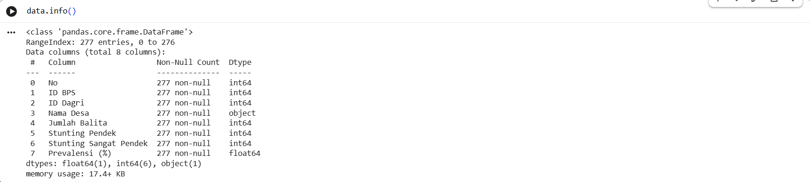
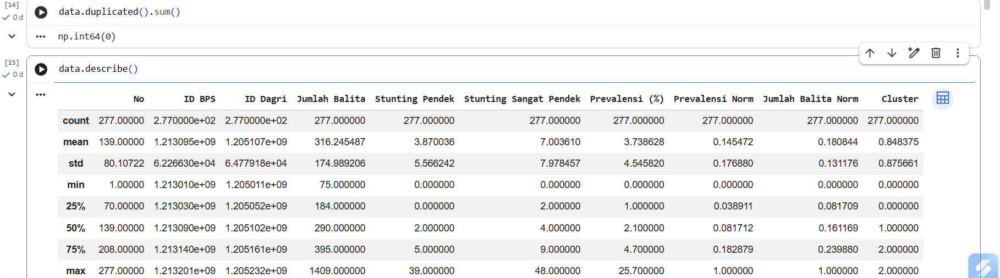
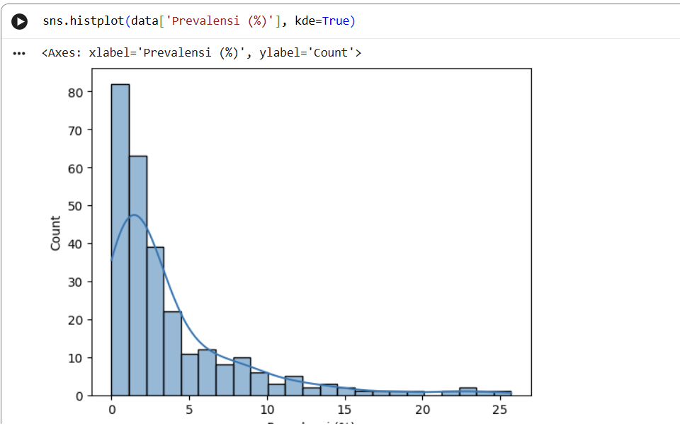
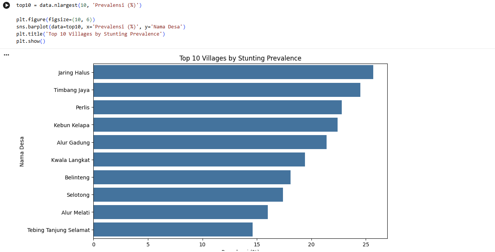
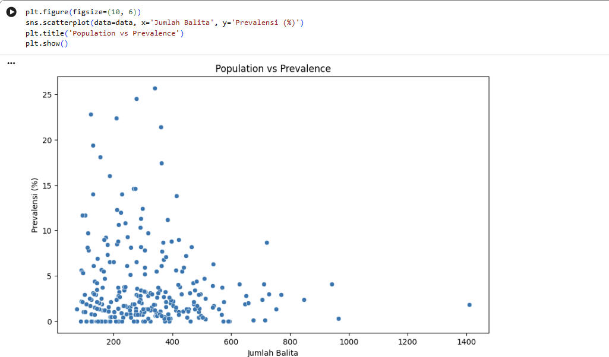
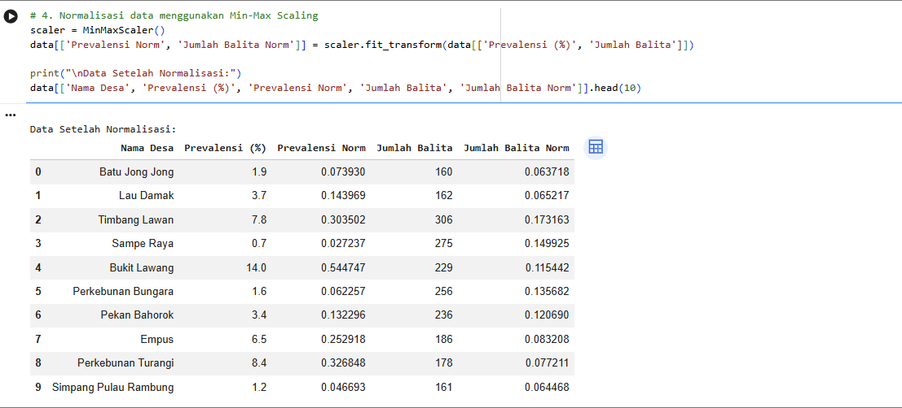
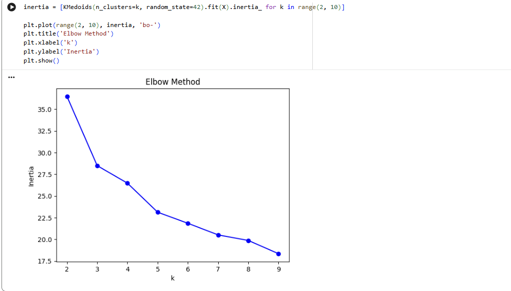
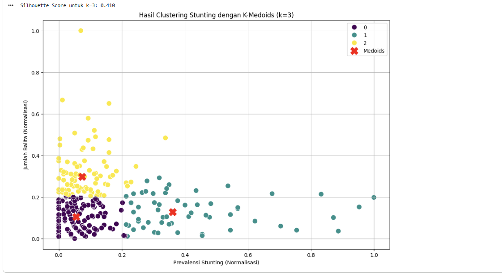

Stunting Risk Clustering in Langkat Regency Using K-Medoids
Identifying village-level patterns based on stunting prevalence and under-five population.
Ringkasan: Analisis clustering menggunakan Python dan K-Medoids untuk mengelompokkan desa di Kabupaten Langkat berdasarkan prevalensi stunting dan jumlah balita.
| Metric | Value |
|---|---|
| Villages analyzed | 277 |
| Clustering method | K-Medoids |
| Final clusters | 3 |
| Silhouette score | 0.410 |
2. Problem & Analytical Questions
Analisis ini bertujuan untuk menjelaskan variasi prevalensi stunting antar desa dan kebutuhan untuk menemukan kelompok desa dengan karakteristik serupa.
- Bagaimana distribusi prevalensi stunting antar desa?
- Apakah desa dapat dikelompokkan berdasarkan karakteristik yang serupa?
- Berapa jumlah cluster yang sesuai untuk dataset?
- Bagaimana karakteristik masing-masing cluster?
- Apakah jumlah balita berkaitan secara konsisten dengan prevalensi stunting?
3. Dataset & Data Understanding
- Source: e-Monev Konvergensi Stunting, Kementerian Dalam Negeri
- Year: 2023
- Scope: Kabupaten Langkat
- Unit: Desa
- Records: 277
Data Dictionary
| Column | Description | Role |
|---|---|---|
| No | Nomor record | Identifier |
| ID BPS | Identifier desa BPS | Identifier |
| ID Dagri | Identifier desa Kemendagri | Identifier |
| Nama Desa | Nama desa | Identifier |
| Jumlah Balita | Jumlah anak balita | Clustering feature |
| Stunting Pendek | Jumlah stunting pendek | Supporting variable |
| Stunting Sangat Pendek | Jumlah stunting sangat pendek | Supporting variable |
| Prevalensi (%) | Prevalensi stunting | Clustering feature |
4. Data Quality Check
- Prevalensi stunting bervariasi antar desa.
- Cluster 1 memiliki rata-rata prevalensi tertinggi, sekitar 10.76%.
- Cluster 2 memiliki rata-rata jumlah balita sekitar 507, tetapi rata-rata prevalensinya sekitar 2.13%.
- Jumlah balita tidak menunjukkan pola yang konsisten sebagai penjelas langsung tingkat prevalensi pada hasil clustering.
- Model utama hanya menggunakan dua fitur: prevalensi stunting dan jumlah balita. Clustering tidak membuktikan hubungan kausal atau faktor penyebab stunting.
- Variabel sosial-ekonomi, akses layanan kesehatan, geografis, dan indikator gizi belum tersedia dalam model.
- Pemilihan k=3 perlu diperkuat dengan perbandingan Silhouette Score untuk beberapa nilai k.
- Tambahkan variabel sosial-ekonomi, akses kesehatan, geografis, dan indikator gizi jika tersedia.
- Bandingkan K-Medoids dengan metode clustering lain untuk menguji kestabilan pola.
- Evaluasi kualitas cluster dengan beberapa metrik dan beberapa nilai k.
- Gunakan hasil cluster sebagai dasar eksplorasi lebih lanjut, bukan sebagai bukti faktor penyebab mutlak.


5. Exploratory Data Analysis (EDA)
5.1 Distribution of Stunting Prevalence
Distribusi prevalensi stunting di Kabupaten Langkat memperlihatkan pola right-skewed atau condong ke kanan secara signifikan. Mayoritas desa berkerumun pada tingkat prevalensi yang sangat rendah, yakni di bawah 5%, dengan puncak kepadatan tertinggi berada di rentang 0% hingga 2%. Meskipun secara umum angka stunting tampak terkendali di sebagian besar wilayah, kurva ekor panjang (long tail) yang menjuntai ke sebelah kanan mengungkapkan adanya sejumlah kecil desa dengan tingkat stunting yang ekstrem. Terdapat beberapa desa yang mencatatkan prevalensi jauh melampaui rata-rata, membentang dari 10% hingga mendekati angka 25%..

5.2 Top 10 Villages by Prevalence
Visualisasi bar chart tersebut secara spesifik menyoroti 10 desa dengan tingkat prevalensi stunting tertinggi di Kabupaten Langkat. Desa Jaring Halus menempati urutan pertama sebagai wilayah paling kritis dengan angka prevalensi yang melampaui batas 25%. Posisi ini diikuti erat oleh desa Timbang Jaya, Perlis, Kebun Kelapa, dan Alur Gadung yang seluruhnya mencatatkan angka prevalensi di atas 20%. Bahkan, desa yang berada di urutan kesepuluh (Tebing Tanjung Selamat) masih menunjukkan tingkat stunting di kisaran 14,5%. Daftar 10 besar ini dengan jelas memetakan titik-titik lokasi darurat (hotspots) yang mutlak membutuhkan prioritas utama dan intervensi gizi segera dari pemerintah daerah. Selain itu, grafik ini mengonfirmasi keberadaan desa-desa outlier yang sebelumnya terlihat pada bagian ekor panjang (long tail) di histogram distribusi. .

5.3 Distribution of Under-Five Population
Visualisasi histogram distribusi jumlah balita kembali memperlihatkan pola right-skewed atau condong ke kanan. Mayoritas desa di Kabupaten Langkat memiliki populasi balita pada rentang yang moderat, yakni terpusat di kisaran 100 hingga 400 jiwa per desa. Meskipun sebagian besar desa memiliki populasi yang wajar, grafik ini dengan jelas menyoroti adanya ekor panjang (long tail) di sisi kanan. Hal ini mengindikasikan keberadaan segelintir desa "padat penduduk" yang memiliki jumlah balita di atas 600 hingga 800 jiwa. Bahkan, terlihat sangat jelas adanya nilai ekstrem (outlier) di mana sebuah desa mencatatkan populasi balita yang sangat masif, yaitu mendekati angka 1.400 jiwa. Distribusi yang tidak merata dan kehadiran desa-desa berpopulasi padat ini menjadi variabel penting. Dalam konteks kebijakan kesehatan, desa dengan populasi balita yang sangat besar memerlukan kapasitas fasilitas kesehatan (seperti Posyandu) yang jauh lebih masif untuk mencegah terjadinya ledakan kasus gizi buruk.

5.4 Population vs Prevalence
Scatterplot untuk melihat pola dua fitur utama.
📷 [Tempat Foto: Scatterplot Populasi vs Prevalensi]

6. Data Preparation
Feature selection: Menggunakan Prevalensi (%) dan Jumlah Balita sebagai fitur clustering. Identifier seperti No, ID BPS, ID Dagri, dan Nama Desa tidak dimasukkan ke model.
6.1 Min-Max Scaling
Normalisasi mengubah kedua fitur ke skala 0-1 sehingga perbedaan satuan/magnitude tidak mendominasi perhitungan jarak.
📷 [Tempat Foto: Hasil Normalisasi / Min-Max Scaling]

7. Clustering Methodology
7.1 Euclidean Distance
Mengukur jarak antar desa berdasarkan fitur yang telah dinormalisasi.
7.2 K-Medoids
Mengelompokkan observasi berdasarkan medoid yang merupakan observasi aktual dalam dataset.
7.3 Model Configuration
Model final menggunakan K-Medoids dengan k=3 dan random_state=42.
📷 [Tempat Foto: Snippet Kode K-Medoids]

8. Choosing the Number of Clusters
Gunakan Elbow Method untuk melihat perubahan inertia pada k=2 sampai k=9. Dokumentasi menunjukkan elbow sekitar k=3-4, sehingga pemilihan k=3 dipilih.
📷 [Tempat Foto: Grafik Elbow Curve & Silhouette Score]

9. Clustering Results
📷 [Tempat Foto: Visualisasi Hasil Clustering (Scatter Plot Cluster)]

| Cluster | Villages | Avg. Prevalence | Avg. Under-five | Profile |
|---|---|---|---|---|
| 0 | 130 | 1.64% | 216 | Low prevalence / moderate population |
| 1 | 59 | 10.76% | 252 | High prevalence / moderate population |
| 2 | 88 | 2.13% | 507 | Moderate prevalence / high population |
11. Key Insights
12. Cluster Profiling
Tabel ringkasan per cluster di bawah membandingkan nilai statistik dan contoh desa untuk menegaskan karakteristik setiap cluster tanpa klaim sebab-akibat.
📷 [Tempat Foto: Tabel Profil/Karakteristik Cluster & Contoh Desa]